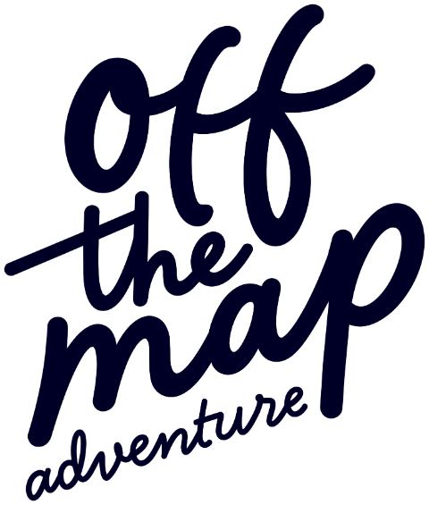

Arrival
A quiet first night
Afternoon arrival in Kelowna and the drive up to the chalet. Time to settle in and unpack, without rushing, and an evening to recover from the journey.

British Columbia, Canada
Ten nights in a chalet above Kelowna, in the heart of Canada's main wine region. Six people, never more.

Each day opens onto the region differently: cycling the historic wooden trestle bridges of Myra Canyon, tastings at wineries with long views, a boat trip on Lake Okanagan, moderate hikes beside lakes that change colour.
There is room for the urban and cultural side of the valley too, with chosen stops in Kelowna, Lake Country, Vernon, Peachland and Osoyoos. A niche trip, away from the busy routes, built so what you bring home actually stays.
British Columbia's main wine region: hundreds of vineyards spread along the lake and the hills around it, and small towns with an identity of their own.
On Big White, where the chalet is, summer is cool and dry, 22–28 °C. Around Kelowna, Vernon and Osoyoos it is hotter and drier, 25–35 °C.
Adults who want authentic places, a sustainable pace, and a shared experience built with care.
A quiet first night
Afternoon arrival in Kelowna and the drive up to the chalet. Time to settle in and unpack, without rushing, and an evening to recover from the journey.

Culture and city
The Cultural District: the Okanagan Wine & Orchard Museum and the Kelowna Art Gallery, with a coffee at Sprout in between.
A walk to City Park on the shore, brunch on Bernard Road, and an hour on the lake by electric boat.
Wine and nature
The view from Oyama Lookout, then tastings at 50th Parallel, known for its sustainable viticulture, and at the historic Gray Monk.
Lunch overlooking the vines at Peak Cellars, and Kaloya Regional Park above Kalamalka Lake.


The iconic one
Two to two and a half hours cycling the trestles, the historic wooden bridges suspended over the canyon. Panoramic, and easy enough for everyone.
The afternoon is yours in Kelowna. Dinner at the chalet, cooked by the chef.
The authentic Okanagan
Kangaroo Creek Farm, then fruit picking at a local orchard, one of the most authentic things the valley does.
A picnic with local wine at Bertram Creek, on the lakeshore, and the pyramid at Summerhill.

A small town worth finding
A moderate hike on Pincushion Mountain and lunch at Bliss Bakery. Mission Hill Family Estate in the afternoon, then two and a half hours cooking with the chef, with the fruit picked the day before.

The lake of colours
Kalamalka Lake, and the Wall Loop Trail: about 7 km, two hours, turquoise water below. Then down to the lake to swim.
A free afternoon on 30th Avenue, BX Falls, and a honey tasting at Planet Bee.
Float and breweries
An hour drifting down the channel between Okanagan and Skaha lakes, the thing everyone here does in summer. Then the Beer Blocks, in Canada's craft beer capital.
On the road to the mountain
Two and a half hours on the Trans-Canada, along Shuswap Lake. In the afternoon, the gondola to the top of Mount Mackenzie, between the Selkirks and the Monashees.
Two nights in Revelstoke, not at the chalet.


Mountain and adventure
The Meadows in the Sky Parkway, with a short walk through the alpine meadows of Mount Revelstoke National Park. Time in town, or Big Eddy Glass Works.
River, and back to Kelowna
Rafting the Illecillewaet or floating the Columbia, paid to the operator. The Enchanted Forest, then the drive back, at the chalet by six for dinner.
Bye bye Canada
A light breakfast at the chalet and a short closing together, then Kelowna airport.

Your host
Art Director and founder of Studio Superbo. She sets the rhythm of the trip: local culture, places with a real connection to nature, and moments that stay in your memory. Italian and English.
Your chef
More than fifteen years in kitchens across Spain, the United States, Mexico and Canada. Global influences, local ingredients, and a guide to the valley for the meals on your own. Spanish and English.

Nine breakfasts and six dinners, cooked by Nora.
Paid on arrival: $3,050 MXN per person, in cash, for the shared transport fund. It covers the car, fuel and parking, with receipts.
Book with 30%. Pay the rest monthly or in one payment, settled 45 days before you travel. You have 15 days to change your mind about the deposit.
21 June – 1 July 2027
2 seats left
$8,070 to book, the rest by 7 May
Book a seat8 – 18 July 2027
Full
We'll write if a seat opens
Join the waitlist20 – 30 July 2027
5 seats left
$8,070 to book, the rest by 5 June
Book a seat26 August – 5 September 2027
6 seats left
$8,070 to book, the rest by 12 July
Book a seat